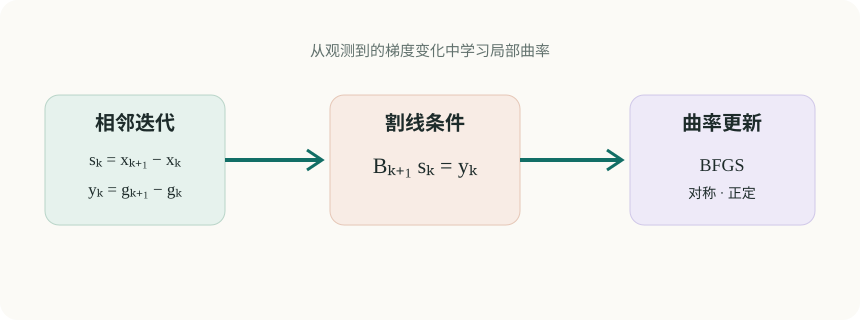

3.3.3 拟 Newton 法：用梯度差近似曲率
Newton 法需要 Hessian；拟 Newton 法不直接求 Hessian，而是从相邻迭代的位移与梯度变化中学习曲率，并在合适的 Wolfe 线搜索下获得超线性收敛。
为什么要近似 Hessian
Newton 方向需要求解 Hkpk=−gk。当 Hessian 的计算或存储成本较高时，可以改用对称正定矩阵 Bk 近似 Hessian，并定义 pk=−Bk−1gk。只要 Bk 正定，方向就是下降方向。
拟 Newton 更新的目标不是逐元素重建 Hessian，而是让 Bk 在新获得的方向信息上足够准确。每次迭代只需保存向量 sk 和 yk，便可构造低秩修正。
割线条件：让近似曲率解释梯度变化

定义步长位移 sk=xk+1−xk，梯度变化 yk=gk+1−gk。若 Hessian 在这段线段上近似常数，则 yk≈Hksk。拟 Newton 方法要求新矩阵满足割线方程：
这个方程只约束 Bk+1 在一个方向 sk 上的作用，不能唯一决定整个矩阵。因此更新公式还需要额外准则，例如尽量少改变旧矩阵、保持对称与正定。
BFGS 如何保持正定性
一个经典的 Hessian 近似更新是 BFGS：
若 Bk 正定且曲率条件 ykᵀsk>0 成立，BFGS 更新保持正定。弱 Wolfe 曲率条件不仅限制步长，也会给拟 Newton 更新提供正曲率信息。因为 sk=αkpk，且 gkᵀpk<0，弱 Wolfe 不等式给出
由于 c2−1<0 且 gkᵀpk<0，右侧严格为正。因此若 Bk 正定，BFGS 更新保持正定，下一轮方向仍为下降方向。
Dennis–Moré 条件与超线性收敛
拟 Newton 法不必让 Bk 在所有方向都收敛到 H*。足够的条件是：沿实际搜索方向，近似 Hessian 与真实 Hessian 的差相对步长越来越小：
若 x_k 收敛到 x*、∇f(x*)=0 且 H*=∇²f(x*) 正定，方向满足上面的 Dennis–Moré 条件，并使用 0
为什么必须优先尝试单位步长
单位步长不是装饰性的默认值。局部超线性理论说明：在接近解后，α=1 最终满足 Wolfe 条件。若线搜索每次都从一个极小的上界开始，或从不尝试 α=1，就可能主动错过 Newton 型快速收敛区间。实际拟 Newton 线搜索通常先试 α=1，若通过则直接接受，否则再括区间和缩短。
本节结论：拟 Newton 的快速局部收敛来自“方向上的 Hessian 近似足够准确”与“最终采用单位步长”的配合；单独写出 BFGS 更新式，并不能自动推出超线性收敛。
交互：BFGS 的割线更新
在 Q=[[4,1],[1,3]] 的二维二次目标上，从 B₀=diag(s,1) 开始，使用精确线搜索和 BFGS 更新。改变 s，观察割线残差、yᵀs 与更新矩阵是否保持正定。
实时计算
Python：可复现的数值检查
这是一个二维正定二次目标上的最小 BFGS 实验。它检查曲率正性、割线方程残差和更新矩阵正定性；不以两维有限步收敛代替一般非线性问题的超线性收敛证明。
"""A small 2-D BFGS experiment with exact line search on a quadratic."""
def dot(a, b):
return a[0] * b[0] + a[1] * b[1]
def matvec(A, x):
return (A[0][0] * x[0] + A[0][1] * x[1],
A[1][0] * x[0] + A[1][1] * x[1])
def solve2(A, b):
det = A[0][0] * A[1][1] - A[0][1] * A[1][0]
if det <= 0.0:
raise ValueError("B must remain positive definite")
return ((A[1][1] * b[0] - A[0][1] * b[1]) / det,
(-A[1][0] * b[0] + A[0][0] * b[1]) / det)
def bfgs_demo(scale: float = 1.0):
Q = ((4.0, 1.0), (1.0, 3.0))
B = [[scale, 0.0], [0.0, 1.0]]
x = (2.0, -1.0)
records = []
for _ in range(5):
g = matvec(Q, x)
if (dot(g, g) ** 0.5) < 1e-10:
break
p = solve2(B, (-g[0], -g[1]))
alpha = -dot(g, p) / dot(p, matvec(Q, p))
s = (alpha * p[0], alpha * p[1])
x_new = (x[0] + s[0], x[1] + s[1])
g_new = matvec(Q, x_new)
y = (g_new[0] - g[0], g_new[1] - g[1])
Bs = matvec(B, s)
sBs, ys = dot(s, Bs), dot(y, s)
if sBs <= 0.0 or ys <= 0.0:
raise ArithmeticError("BFGS curvature condition failed")
B_new = [[B[i][j] - Bs[i] * Bs[j] / sBs + y[i] * y[j] / ys
for j in range(2)] for i in range(2)]
residual = matvec(B_new, s)
secant_error = max(abs(residual[i] - y[i]) for i in range(2))
det = B_new[0][0] * B_new[1][1] - B_new[0][1] * B_new[1][0]
records.append((ys, secant_error, B_new[0][0], det))
B, x = B_new, x_new
return x, records
if __name__ == "__main__":
x, records = bfgs_demo()
print("final x:", x)
print("curvature y^T s:", [r[0] for r in records])
print("secant residuals:", [r[1] for r in records])
assert len(records) >= 2
assert all(r[0] > 0.0 for r in records)
assert all(r[1] < 1e-10 for r in records)
assert all(r[2] > 0.0 and r[3] > 0.0 for r in records)思考：为什么 yᵀs>0 对 BFGS 保持正定性至关重要？如果线搜索只满足 Armijo 而不满足曲率条件，是否仍能无条件保证这个内积为正？